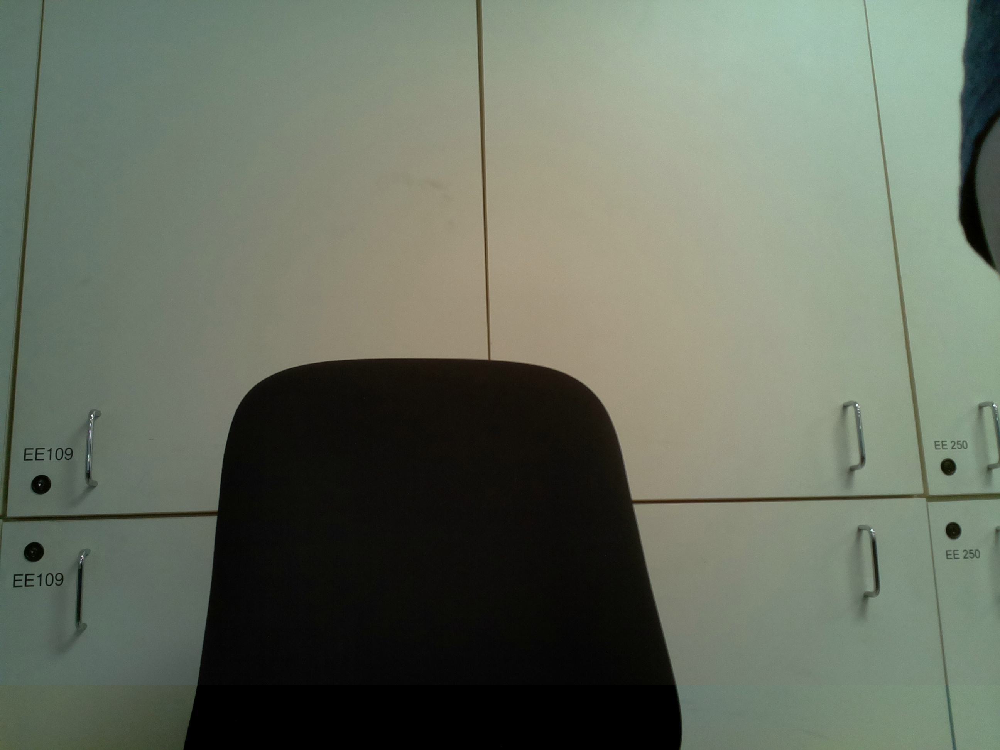

EE 250 Final Project: ASL Converter
Lab Members: Drew Uramoto, Russell Tan, Scott Susanto
Our program facilitates
communication between those with audio disabilities and those who do not understand sign language.
It works by first taking a picture of the hand sign, then applies image processing to clean the
picture before it is fed into the Machine Learning Algorithm, which is based in the Modelplace Cloud API.
It then returns the corresponding english alphabet, which we display here on screen.

Based on the hand sign captured from the camera, the current word is: ERROR